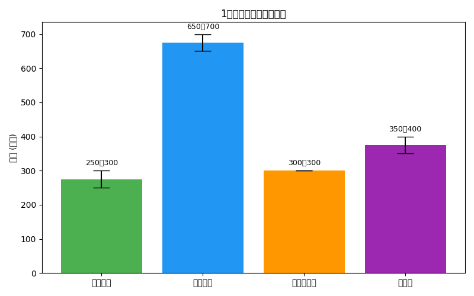
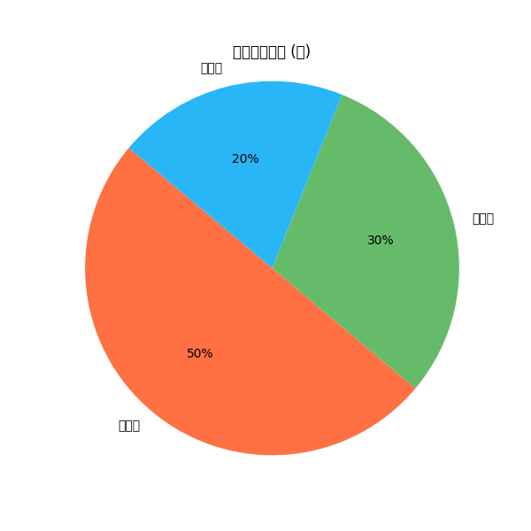

なぜ収益モデルが重要なのか
MakeCampは単なるボランティアではなく、持続可能なコミュニティを目指しています。そのためには収益を生み出し、それを公平に分配する仕組みが不可欠です。初期費用を回収しながら利益を次の拠点や参加者に還元することで、新しい拠点が増え、参加者のモチベーションも高まります。
このモデルにより、空き家の再生や地域体験が一過性のプロジェクトに終わらず、長期的に続くネットワークとして発展していきます。
基本的な収支
1拠点あたりの目安として、初期投資は250〜300万円、年間売上は650〜700万円、年間コストは300万円程度です。粗利益は350〜400万円となり、初年度で投資回収圏内に入ります。

利益の分配
MakeCampでは利益を出資者・参加者・次拠点に分配し、次のプロジェクトへの投資とコミュニティ拡大を促します。下記は一例として50%を出資者、30%を参加者、20%を次拠点に配分した場合の割合を表しています。

| 分配先 | 割合 | 役割 |
|---|---|---|
| 出資者 | 50% | リスクに対する報酬として配当が支払われます。 |
| 参加者 | 30% | DIY作業や地域体験に貢献した時間に応じて還元されます。 |
| 次拠点 | 20% | ネットワーク拡大のための再投資に使われます。 |
透明性と持続可能性
- 透明な収支: 投資・売上・コストの情報を共有し、参加者全員がプロジェクトの状況を把握できます。
- 再投資による拡大: 利益の一部を次拠点へ再投資することで、ネットワークを広げます。
- 参加者への還元: 作業工数や出資比率に応じてフェアに分配し、やりがいを高めます。